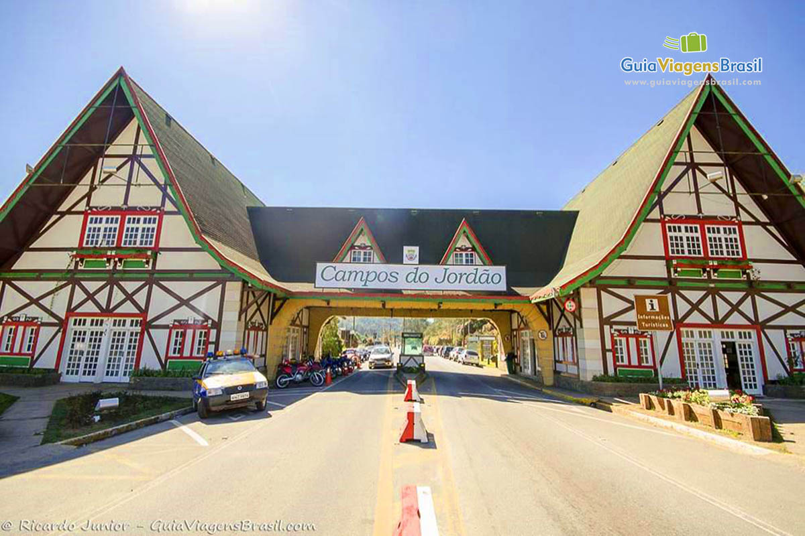

Campos do jordão oferece festival de gastronomia
Campos do Jordão recebe, até o dia 17 de dezembro, um festival
gastronômico chamado 'Restaurant Week', que seleciona pratos dos
principais restaurantes da região para participar do evento, com
menus temáticos sobre os biomas brasileiros. De acordo com a
organização do festival, o objetivo é movimentar e aquecer o mercado
gastronômico. Durante o evento, estabelecimentos selecionados
preparam um menu especial e temático com preços fixos para atrair
clientes.
Leia Mais
Time de Jacareí Rugby conquista títulos no Campeonato Paulista de
Sevens
Duas equipes de Jacareí conquistaram os títulos do Campeonato
Paulista de Sevens, em Guarulhos (SP), em disputas realizadas no
último domingo (26). O SESI Jacareí Rugby M16 bateu o Pasteur na
final por 22 a 12 e ficou com o troféu. Já o SESI Jacareí Rugby M19
foi campeão ao vencer o SPAC por 40 a 5. Além dos campeões, outros
times do Jacareí Rugby também estiveram em disputas durante o fim de
semana.
Leia Mais

PAT de São José dos Campos vai abrir quase 400 vagas de emprego
nesta segunda-feira; veja como se candidatar
O cargo com maior quantidade de vagas disponíveis é o de operador de
telemarketing, com 250 vagas abertas, sendo que 200 delas são
exclusivas para pessoas com deficiência.
Leia Mais